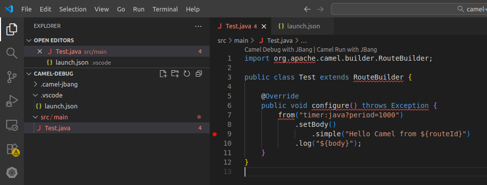
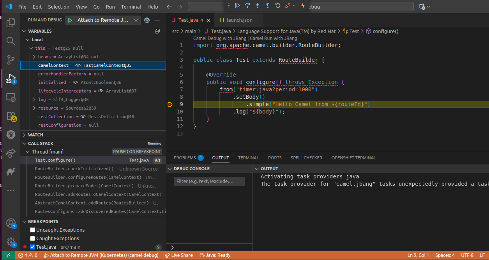

Debugging Camel K Integrations
Sometimes an Integration can fail or behave unexpectedly for unknown reasons, and a developer needs to investigate the cause of such behavior. Attaching a Java debugger to an Integration is a common way to start the investigation.
Even if the Integration Pods runs on a Kubernetes cluster, it’s very easy to attach a Java debugger to the remote Integration container using the CLI.
Camel K offers some easy approach and some tool which can turn very useful when you want to start a remote debugger and acts as you’re debugging on a local machine.
Although technically it is feasible to debug any Camel DSL, in practice, it can result complicated to add a breakpoint on any non Java DSL. For this reason, the guidelines provided in this section are specific to Java DSL.
Debug a Camel application
The very first thing to do is to run an application. It’s important you have the source code at hands, as later you will need such a source code for your IDE as well.
$ kamel run src/main/Test.javaWhen the application has started. You can use the kamel debug command to put it in debug mode:
| make sure you don’t debug a production workflow. The debug is stopping the previous running Pods and restart a new Pod with the specific profile activated. |
$ kamel debug testThe goal of the debug command is to equip the running application with the JVM configuration required to debug a Java application. Additionally it creates a proxy toward the port defined (default, 5005) so that you can execute the debugger on localhost and bridge transparently to the remote cluster.
$ kamel debug test
Enabling debug mode on integration "test"...
2025-11-25T15:42:02+01:00 DEBUG camel-k First attempt to bootstrap Port Forward with LabelSelector: camel.apache.org/debug=true,camel.apache.org/integration=test
...
Forwarding from 127.0.0.1:5005 -> 5005
Forwarding from [::1]:5005 -> 5005
[1] Monitoring pod test-64c8ddc7f7-w4njw
[1] Listening for transport dt_socket at address: 5005The application is suspendend (which is the default) until a debugger is attached. From this point onward you can attach your debugger and continue the debugging on your preferred IDE.
you can use any other port and JVM options, see kamel debug --help. |
Debugging Camel in VSCode
We are providing some guidelines to illustrate how you can debug Camel on VSCode. Other IDEs may have a different way of achieving the goal, so you may follow their guidelines as for any other Java application.
You may have noticed that we have started the application in src/main/Test.Java. This is something that is expected by VSCode, as any regular Java application convention. You can therefore open VSCode and under the project root folder you can include the following debug configuration:
{
"version": "0.2.0",
"configurations": [
{
"type": "java",
"name": "Attach to Remote JVM (Kubernetes)",
"request": "attach",
"hostName": "localhost",
"port": 5005,
"projectName": "my-java-app",
"timeout": 30000
}
]
}The file has to be saved under .vscode/launch.json of the project root directory. It basically tells the IDE to connect the debugger as it was on localhost:5005. Then, on your application you can add the breakpoint on the place you need to investigate. For example:

At this stage you can start the debugger via "Run >> Start Debugging" option. The Pod will resume its execution and it will stop when reaching the breakpoint. Here you will be able to debug according to your specific needs:

When the debugging session is over, feel free to stop the kamel debug via CTRL + C. This will terminate the Integration debugging Pod and will start a new Pod to continue its work as usual.